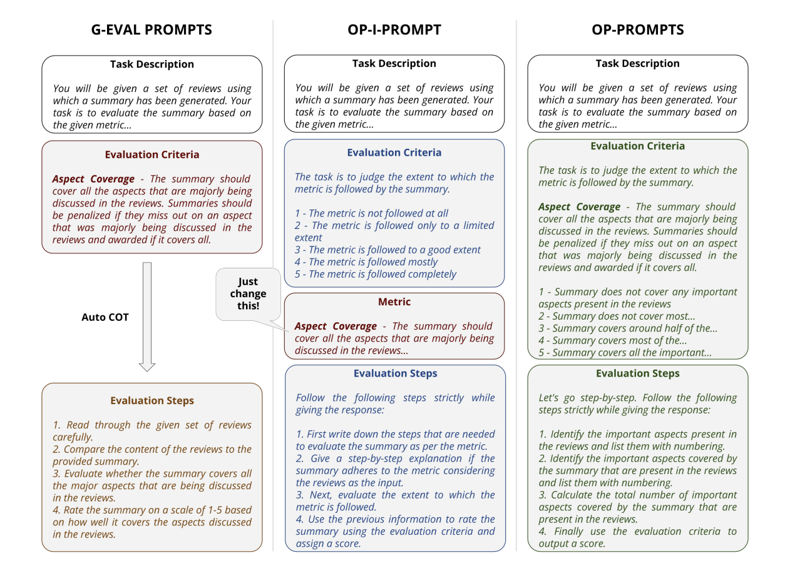

One Prompt To Rule Them All: LLMs for Opinion Summary Evaluation
Tejpalsingh Siledar†1, Swaroop Nath†1, Sri Raghava†1, Rupasai Rangaraju†1, Swaprava Nath1, Pushpak Bhattacharyya1, Suman Banerjee2, Amey Patil2, Sudhanshu Shekhar Singh2, Muthusamy Chelliah2, Nikesh Garera2
1Computer Science and Engineering, IIT Bombay 2Flipkart
†Equal contribution
A single prompt, with only the metric definition swapped per dimension, lets LLMs evaluate opinion summaries at an average Spearman correlation of 0.70 with human judgments.
Interactive Demo
Browse the SummEval-Op benchmark: pick a product, a summary and a dimension to see the human ratings and the exact prompt the LLM evaluator receives. Switch dimensions to see which lines of each prompt change.
Reviews (8)
Reviews, summaries, per-rater scores and prompts are from the released SummEval-OP files. Each summary was rated 1–5 by three expert raters; product names are short descriptions added for this page.
Abstract
Evaluation of opinion summaries using conventional reference-based metrics often fails to provide a comprehensive assessment and exhibits limited correlation with human judgments. While Large Language Models (LLMs) have shown promise as reference-free metrics for NLG evaluation, their potential remains unexplored for opinion summary evaluation. Furthermore, the absence of sufficient opinion summary evaluation datasets hinders progress in this area. In response, we introduce the SummEval-Op dataset, encompassing 7 dimensions crucial to the evaluation of opinion summaries: fluency, coherence, relevance, faithfulness, aspect coverage, sentiment consistency, and specificity. We propose Op-I-Prompt, a dimension-independent prompt, along with Op-Prompts, a dimension-dependent set of prompts for opinion summary evaluation. Our experiments demonstrate that Op-I-Prompt emerges as a good alternative for evaluating opinion summaries, achieving an average Spearman correlation of 0.70 with human judgments, surpassing prior methodologies. Remarkably, we are the first to explore the efficacy of LLMs as evaluators, both on closed-source and open-source models, in the opinion summary evaluation domain.
Method

Each prompt asks for an explanation followed by a 1–5 score. The final score is the mean over n = 100 sampled responses (temperature 0.7), which estimates the probability-weighted score o = Σk p(sk) × sk used by G-Eval.
One Summary, Two Prompts
Sample responses for the same summary (LS-Sum-G, leather boots) on aspect coverage, from the paper. The summary leaves out aspects the reviews discuss at length; G-Eval misses this, Op-I-Prompt does not.
G-Eval response
<score>5</score> Explanation: The summary covers all the major aspects discussed in the reviews, including the comfort and break-in period of the boots. It also mentions that the boots take a little while to break in, which is a common theme among the reviews. Therefore, the summary receives a high rating for its aspect coverage.
Op-I-Prompt response
The metric for evaluation is Aspect Coverage. The summary should cover all the aspects that are majorly being discussed in the reviews. The reviews mention the following aspects: comfort and break-in period. The summary states “I love Frye boots. They are the most comfortable boots I have ever worn.” This covers the comfort aspect. The summary also states “They do take a little while to break in, but they are worth the wait.” This covers the break-in period aspect. However, the summary does not mention anything about the durability, fit and appearance aspects. Since these aspects were majorly being discussed in the reviews, the summary does not follow the metric completely. Score- <score>2</score> The summary only follows the metric to a limited extent while generating the summary from the reviews.
Results
Summary-level correlation of each metric with human ratings. On SummEval-Op, reference-based metrics correlate negatively; Op-I-Prompt is on par with G-Eval when ChatGPT-3.5 is the evaluator, and ahead of it on all seven dimensions with the open-source Mistral-7B.
Show as table
Human ratings of each summarizer
Average annotator rating (1–5) per dimension after the second annotation round. Click a dimension to sort.
From Table 3 of the paper. Human reference summaries were written in the first person, as reviews, so the comparison with LLM summaries is not conclusive.
Citation
@inproceedings{siledar-etal-2024-one,
title = "One Prompt To Rule Them All: {LLM}s for Opinion Summary Evaluation",
author = "Siledar, Tejpalsingh and
Nath, Swaroop and
Muddu, Sankara and
Rangaraju, Rupasai and
Nath, Swaprava and
Bhattacharyya, Pushpak and
Banerjee, Suman and
Patil, Amey and
Singh, Sudhanshu and
Chelliah, Muthusamy and
Garera, Nikesh",
editor = "Ku, Lun-Wei and
Martins, Andre and
Srikumar, Vivek",
booktitle = "Proceedings of the 62nd Annual Meeting of the {A}ssociation for {C}omputational {L}inguistics (Volume 1: Long Papers)",
month = aug,
year = "2024",
address = "Bangkok, Thailand",
publisher = "Association for Computational Linguistics",
url = "https://aclanthology.org/2024.acl-long.655/",
doi = "10.18653/v1/2024.acl-long.655",
pages = "12119--12134"
}